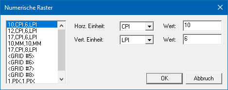

Mit Hilfe des Buttons "Num. Raster bearbeiten" im Bereich der Seiteneinstellungen können Rasterungen bearbeitet bzw. neue numerische Rasterungen definiert werden.
Eigenschaftsfenster "Numerische Raster"

In dem Fenster können bis zu 10 verschiedene Raster angelegt werden, wobei für jedes Raster folgende Eingaben erfolgen können:
Ø Horz. Einheit
Hier wird die horizontale Maßeinheit eingetragen, wobei die folgenden Optionen zur Verfügung stehen:
ü CPI (Zeichen pro Zoll)
ü 1/10 MM (Zehntel Millimeter)
ü 1/10 inch (Zehntel Zoll)
ü Pixel
Ø Wert
An dieser Stelle wird der Wert für das horizontale Raster (basierend auf der horizontalen Einheit) eingegeben.
Ø Vert. Einheit
Hier wird die vertikale Maßeinheit eingetragen, wobei die folgenden Optionen zur Verfügung stehen:
ü LPI (Zeilen pro Zoll)
ü 1/10 MM (Zehntel Millimeter)
ü 1/10 inch (Zehntel Zoll)
ü Pixel
Ø Wert
An dieser Stelle wird der Wert für das vertikale Raster (basierend auf der vertikalen Einheit) eingegeben.